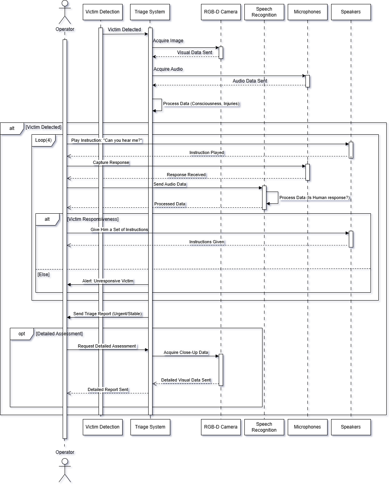

Triage System
{kind=link}
Diagram Overview
1. Description of the Sequence Diagram (Triage System)
This sequence diagram illustrates the interactions between different entities involved when the robot performs a triage assessment on a detected victim.
Participants: The key participants (represented by vertical lifelines) are the Operator (human supervisor), the main Triage System logic unit, the RGB-D Camera, Speech Recognition module, Microphones, and Speakers.
Initial Assessment: The process begins (presumably after a victim is detected, indicated by the alt [Victim Detected] fragment) with the Triage System acquiring visual data from the RGB-D Camera and audio data from the Microphones. This data is initially processed to assess consciousness and potential injuries.
Responsiveness Check:
The Triage System then initiates an interaction to check responsiveness. It instructs the Speakers to play an instruction (“Can you hear me?”). This is shown within a Loop(4) fragment, suggesting the system might try this interaction up to four times if necessary.
The Microphones capture any response, sending the audio data to the Triage System.
This audio data is forwarded to the Speech Recognition module to determine if a human response was received.
The Triage System processes the result from Speech Recognition.
Conditional Action (Responsiveness): An alt (alternative) fragment shows two paths based on the responsiveness check:
If the victim is responsive ([Victim Responsiveness]), the Triage System uses the Speakers to give a set of instructions.
Otherwise ([Else]), the Triage System alerts the Operator about the unresponsive victim.
Reporting: After the responsiveness check (and potential instruction), the Triage System sends a Triage Report (categorized as Urgent/Stable) to the Operator.
Optional Detailed Assessment: An opt (optional) fragment at the end shows that the Operator can request a Detailed Assessment. If requested, the Triage System acquires close-up visual data using the RGB-D Camera and sends a Detailed Report back to the Operator.
In essence, the diagram details the step-by-step message exchange and processing flow required for the robot to assess a victim’s condition, interact with them, and report the findings.
2. Why a Sequence Diagram is an Appropriate Behavioral Diagram for the Triage System
A sequence diagram is an excellent choice for representing the behavior of the Triage System component for the following reasons:
Focus on Interactions and Order: The core function of the Triage System involves a specific sequence of interactions between multiple components (the system logic, sensors like the camera and microphone, actuators like the speaker, external systems like speech recognition, and the human operator). Sequence diagrams excel at visualizing this time-ordered sequence of messages passed between different objects or components. This clearly shows who does what and when.
Clarity of Collaboration: The Triage System doesn’t operate in isolation. It collaborates with the camera, microphone, speaker, speech recognition, and the operator. A sequence diagram clearly depicts these collaborations and dependencies, showing how the components work together to achieve the triage goal.
Represents Use Case Scenarios: This diagram effectively models a specific scenario or use case: “perform triage on a detected victim.” It shows the flow of events for this behavior, making it easy to understand the intended interaction pattern.
Highlights Control Flow: The use of fragments like alt (alternatives), opt (optionals), and loop allows the diagram to represent conditional logic and repetition within the interaction sequence, which are crucial aspects of the triage process (e.g., checking responsiveness, optionally getting more detail).
Alignment with Component Type: The Triage System is inherently an interactive and process-driven component. Its behavior is defined by the sequence of steps it takes and the messages it exchanges. A behavioral diagram that emphasizes this interaction sequence, like the sequence diagram, is therefore highly consistent with the nature of this component.
Key Performance Indicators (KPIs) for the Triage System:
KPI |
Metric |
Success Criteria |
|---|---|---|
|
Correctly classify conscious vs unconscious victims via visual cues |
≥85% detection accuracy |
|
Response detection to robot speech |
≥90% true positive rate for responsive victims |
|
Correct categorization of injury levels (e.g., bleeding/ suspected fracture) using color, motion, posture |
≥80% accuracy on test cases |
|
Correct formatting and content of published triage info |
Matches expected content and topic |
|
% of successful messages on /triage_report |
100% success rate on real detections |
|
Time from first input signal (image/audio) to triage report |
≤1.5 seconds |
code
TriageSystem Node
A ROS-based triage system that evaluates victim status in disaster response scenarios.
Subscribes to: - /victim_location (nav_msgs/Odometry): Location of detected victims - /xtion/rgb/image_raw (sensor_msgs/Image): RGB camera feed for visual analysis - /audio (audio_common_msgs/AudioData): Audio stream for responsiveness checks
Publishes: - /triage_status (tiago_sar_cogarch/TriageReport): Comprehensive triage assessment
Services: - Uses /speaker (tiago_sar_cogarch/Speaker): Text-to-speech service for victim interaction
- class scripts.triage_system.TriageSystem[source]
Bases:
objectMain class implementing triage assessment logic.
The system evaluates victims through three primary modalities: 1. Visual consciousness detection (movement analysis) 2. Audio responsiveness verification 3. Injury detection through computer vision
- bridge
ROS-OpenCV image converter
- Type:
CvBridge
- triage_pub
Triage report publisher
- Type:
rospy.Publisher
- speaker_srv
Text-to-speech service client
- Type:
rospy.ServiceProxy
- current_victim
Current victim location
- Type:
geometry_msgs.Pose
- last_question_time
Timestamp of last audio prompt
- Type:
rospy.Time
- response_timeout
Time window for victim response (seconds)
- Type:
float
- prev_img
Previous image frame for motion detection
- Type:
numpy.ndarray
- audio_callback(msg)[source]
Process audio data for victim response detection.
- Parameters:
msg (audio_common_msgs/AudioData) – Raw audio samples
Triggers responsiveness assessment if within response timeout window.
- detect_injuries(image)[source]
Detect potential injuries through visual analysis.
- Parameters:
image (numpy.ndarray) – Input image in BGR format
- Returns:
Detected injury descriptors (bleeding, suspected_fracture)
- Return type:
list
Algorithm: 1. Bleeding detection: Large red regions in HSV color space 2. Fracture suspicion: High edge complexity through Canny/contour analysis
- detect_movement(image)[source]
Detect inter-frame motion using absolute difference.
- Parameters:
image (numpy.ndarray) – Current frame in BGR format
- Returns:
True if mean frame difference exceeds threshold (10)
- Return type:
bool
- detect_voice(data, threshold=0.02)[source]
Basic voice activity detection using RMS energy.
- Parameters:
data (numpy.ndarray) – Audio samples as 16-bit integers
threshold (float) – RMS threshold for voice detection
- Returns:
True if audio energy exceeds threshold
- Return type:
bool
- publish_report(conscious, responsive, injuries)[source]
Publish triage assessment report.
- Parameters:
conscious (bool) – Consciousness status from movement detection
responsive (bool) – Responsiveness status from audio interaction
injuries (list) – Detected injury descriptors